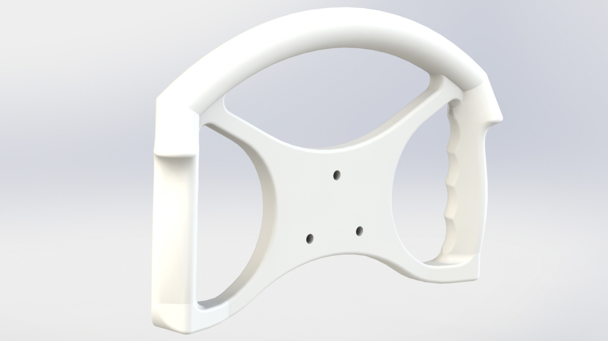

For the first time in our team’s history, I am designing our own steering wheel. Previously we have purchased a heavy and uncomfortable steering wheel, but this year my goals are to reduce weight and required grip force.
I started by researching hand sizes and classic steering wheel and grip designs. I then made some foam core mock ups of different shapes and tested with the team. After reviewing tapes of our driving and actually racing in a competition, I learned that if the steering wheel is designed well, the user should almost never have to move their grip. This lead to the bow and top member design.
I received a grant for $400 from the Norman Design Fund to continue to iterate on this design and print full size models. I plan on making the final version out of carbon fiber and plastic.
Steering Wheel (in progress)
Design an ergonomic and lightweight racing steering wheel

skills
cad, human centered design, manufacturing
role
designer
client
baja sae
Key Learnings
So far I've learned a lot about human factors, both physical and behavioral. Having to model around 40 different driver’s hands, as well as driving styles, has been an eye opening experience. I have learned about compromising for the overall population so my steering wheel doesn’t exclude users with small or large hands. I have also been working with complex modeling in Solidworks and gained experience attempting to make robust models with complex geometries.